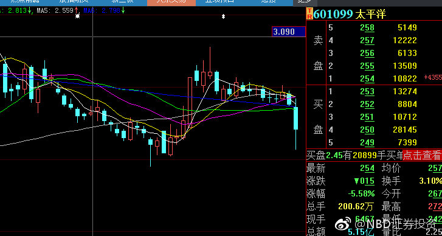
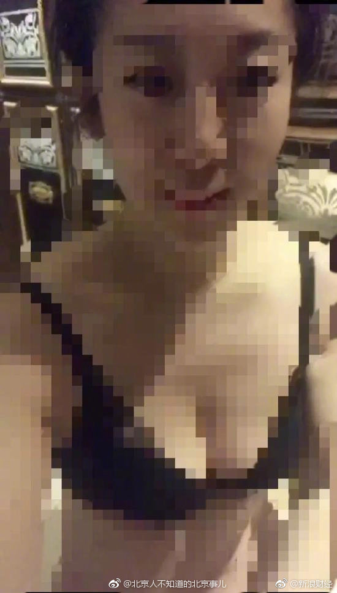

ETF拯救世界
2019-01-28


ETF拯救世界
2019-01-28
看PE或者PB投资券商的都是远未够班。要知道券商的资产可是没那么靠谱。
@张道达:
【“伤心太平洋” ！太平洋证券2018年业绩或亏损15亿元，大概率成券商“亏损王”】1月25日，太平洋（601099，SH）发布业绩预亏公告。太平洋证券称，预计2018年度实现净利润-12亿元到-14亿元，与上年同期(法定披露数据)相比，将减少13.16亿元到15.16亿元。火山君注意到，按此来看，太平洋证券2018年大概率会成券商“亏损王”。 “伤心太平洋” ！太平洋证券2018年业绩或亏损15亿元，大概率成券商“亏损王”
“伤心太平洋” ！太平洋证券2018年业绩或亏损15亿元，大概率成券商“亏损王”
- 

ETF拯救世界
2019-01-28
怎么感觉最近互动变少了。
同志们的工作积极性不高嘛。是不是都去准备过年了。
过年是好事，革命工作也不能放松。对，别看别人，就是说你呢！
同志们的工作积极性不高嘛。是不是都去准备过年了。
过年是好事，革命工作也不能放松。对，别看别人，就是说你呢！
ETF拯救世界
2019-01-28
回复@用户y49f7o7jj4:有一部分股票永远也不可能涨起来了。//@用户y49f7o7jj4:再融资的结果是股市永远不涨？//@ETF拯救世界:回复@英德美加:去年间接融资十几万亿。需要钱的企业非常多。//@英德美加:好企业基本都上市了，剩下的没几个好企业了，谁还需要这么多融资呢
@ETF拯救世界:
我个人认为，就我所经历的几位，尚、郭、肖、刘，都挺好。
肯定是有不足，但关键是，很多事情真不是他们能决定的。这个位置真的很难。几位还都是做了事情的。
个人感觉，这个位置比足协主席难太多了。足协主席很多事情干不好那真是该骂……
肯定是有不足，但关键是，很多事情真不是他们能决定的。这个位置真的很难。几位还都是做了事情的。
个人感觉，这个位置比足协主席难太多了。足协主席很多事情干不好那真是该骂……
ETF拯救世界
2019-01-28
等后续。直觉告诉我背后有故事…
@北京人不知道的北京事儿:
【北京北冰洋发博举报天津一传媒公司员工发裸露视频骚扰其部门主管… 】1月27日，北冰洋官微发了一条微博，称天津畅达传媒公司派工作人员郑某来北京对接高铁广告服务，为达目的，向其公司市场部负责人发裸露视频，骚扰市场部负责领导。希望津畅达传媒公司给予合理解释。。。
】1月27日，北冰洋官微发了一条微博，称天津畅达传媒公司派工作人员郑某来北京对接高铁广告服务，为达目的，向其公司市场部负责人发裸露视频，骚扰市场部负责领导。希望津畅达传媒公司给予合理解释。。。
- 
ETF拯救世界
2019-01-28
沪深300十个月来第一次冲击半年线。
有些朋友现在会不会很慌。
有些朋友现在会不会很慌。